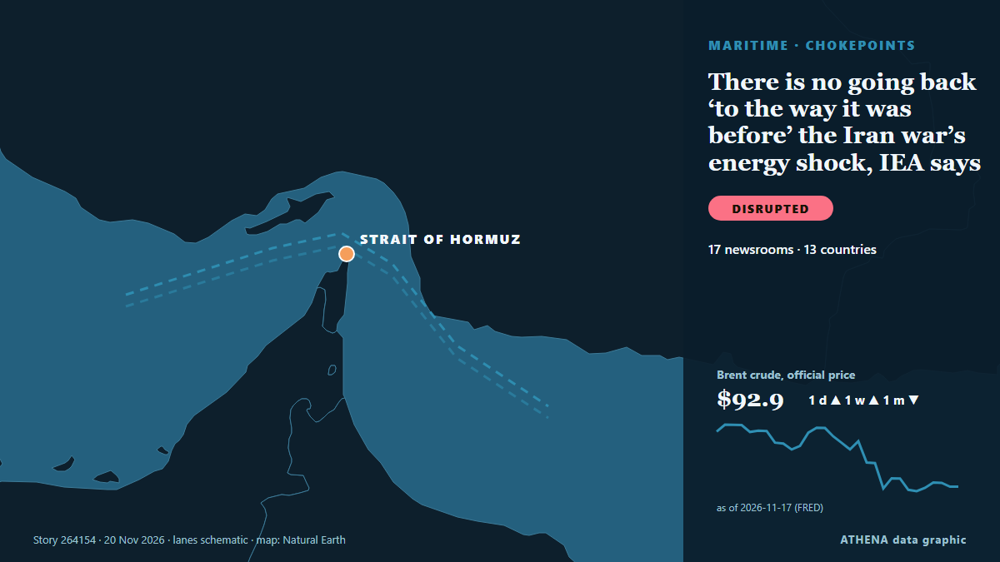

Ενέργεια, Πόροι & Περιβάλλον
ΧορηγούμενοΠαρουσιάζεται από  Cybernetics and Artificial Intelligence Lab Welcome to the Cybernetics and Artificial Intelligence Laboratory, established at the Department of Business Administration of the National and Kapodistrian University of Athens. The lab is headed by Professor Dimitrios Thomakos. The lab aims to do research that can be published in top venues. Our research uses tools and methods of Artificial Intelligence, and lies in the following areas: - Forecasting - Decision making - Cyber security - Finance We are always looking forward to collaborating with exceptional students!
Cybernetics and Artificial Intelligence Lab Welcome to the Cybernetics and Artificial Intelligence Laboratory, established at the Department of Business Administration of the National and Kapodistrian University of Athens. The lab is headed by Professor Dimitrios Thomakos. The lab aims to do research that can be published in top venues. Our research uses tools and methods of Artificial Intelligence, and lies in the following areas: - Forecasting - Decision making - Cyber security - Finance We are always looking forward to collaborating with exceptional students!
Οι τίτλοι των ειδήσεων παρουσιάζονται στα αγγλικά, όπως δημοσιεύτηκαν.

Ενεργειακή ασφάλειαThere is no going back ‘to the way it was before’ the Iran war’s energy shock, IEA says
The International Energy Agency reports that the energy shock from the Iran war is reshaping global energy strategies. από Mongabay
| 7 Νοε | 47 |
|---|---|
| 8 Νοε | 55 |
| 9 Νοε | 110 |
| 10 Νοε | 110 |
| 11 Νοε | 115 |
| 12 Νοε | 90 |
| 13 Νοε | 74 |
| 14 Νοε | 41 |
| 15 Νοε | 50 |
| 16 Νοε | 106 |
| 17 Νοε | 82 |
| 18 Νοε | 73 |
| 19 Νοε | 49 |
| 20 Νοε | 0 |
US-led consortium wins Kenya’s Mrima Hill mineral tender
Frontier Minerals Consortium, Fangda Special Steel and Sinohydro selected for strategic mineral projects in Kwale, Samburu and Tharaka Nithi. από Capital FM Kenya
EnQuest Sells UK North Sea Assets to NEO NEXT+ in $960M Deal
EnQuest has agreed to sell its UK upstream oil and gas business and associated infrastructure to NEO NEXT+ for up to $960 million, marking a major step in its strategic shift towards Southeast Asia… από Offshore Engineer
Fossil Fuels Dropped From Latest COP31 Draft Deal
The new draft omits the main cause of the climate crisis on the summit’s penultimate day, as Panama threatens to block any deal without an oil production cap. από to vima
The Middle East War Has Wiped 2.8 Billion Barrels Off Global Oil Supply
The war in the Middle East has caused global oil supply losses of a total of 2.8 billion barrels plus 60 billion cubic meters of natural gas, the International Energy Agency estimated in its latest… από OilPrice.com
West presses Iran at IAEA to let inspections resume at bombed nuclear sites
VIENNA, Nov 19 - The United States, Britain, France and Germany jointly pressed Tehran at a meeting of the UN atomic watchdog's board on Thursday to let inspectors return to its nuclear sites bombed… από The Straits Times
Fiji Declares State Of Disaster Amid El Nino-Driven Drought
The government has redeployed 20 million Fiji dollars (US$8.5 million) from existing funds to ensure emergency water supplies for families and farmers. από Free Malaysia Today
Woodside seals LNG supply deal with Trafigura
Australian LNG player Woodside has signed an LNG sales and supply agreement with commodity trader Trafigura. από LNG Prime
EU agrees to delay methane rules for energy importers by two years
Compromise postpones key emissions monitoring and reporting obligations until 2029 and 2030 amid concerns over energy security, supply pressures and fuel prices. από TRT World
Cyclone Akvan LIVE: Storm likely to make landfall near Odisha's Gopalpur tomorrow; 3 Andhra districts on red alert
Cyclone Akvan LIVE: Severe cyclonic storm Akvan is likely to move north-northwestward and cross north Andhra Pradesh and Yanam and south Odisha coasts between Narsapur-Puri, close to east of… από Hindustan Times
Global solar PV additions to fall in 2026 for first time since 2018, forecasts GlobalData
Solar PV remained the world’s fastest-growing source of power in 2025, with record annual additions rising 17.5% year-on-year. από Cyprus Shipping News
Countries air grievances in search of COP31 climate deal
Fault lines widen as COP31 struggles for climate deal. από Gulf News
North Korea expanding original uranium enrichment facility, UN nuclear watchdog says
The IAEA has not had access to Yongbyon or other locations in North Korea since the country kicked out the agency’s inspectors in 2009. από Euronews English
HD Hyundai Heavy wins $203.6 mil. order for 4 LPG carriers
HD Hyundai Heavy Industries said Monday it has secured a 272.1 billion-won ($203.6 million) contract to build four liquefied petroleum gas (LPG) carriers. από The Korea Times
ExxonMobil begins oil production at Uaru in Guyana’s Stabroek block
ExxonMobil, via its subsidiary ExxonMobil Guyana, has commenced oil production at Uaru, the fifth development in Guyana’s offshore Stabroek block. από Offshore Technology
Florence Pugh ‘disturbed’ as she responds to ‘stressful’ comments on appearance
The comments were sparked after images of the actress at the Governors Awards went viral. από Evening Standard (London)
Cambodia strengthens national grid to support solar power
Cambodia is taking a significant step towards its renewable energy goals as the Ministry of Mines and Energy launches a major infrastructure project to strengthen the national electricity grid and… από Khmer Times
IAEA chief says planned US-Saudi nuclear deal 'very satisfactory' on inspections
VIENNA: The provisions in a planned US-Saudi nuclear deal for inspections in Saudi Arabia are “very satisfactory” even though they do not include the gold-standard Additional Protocol, the UN nuclear… από Business Recorder
AngloGold Ashanti to invest about $2.5bn in Colombia copper mine
South African miner AngloGold Ashanti (AU.N) plans to invest about $2.5 billion in a copper mine in Colombia, conditional on environmental permits, its corporate affairs manager Stewart Bailey… από MyJoyOnline
Nepal flood victims' families may wait up to a year for death certificates
KUALA LUMPUR: Families of Malaysians missing in the Nepal floods could face another three to 12 months, or longer, to obtain certificates of presumption of death, Malaysia Solidarity Families in Hope… από New Straits Times
Liberia Calls for Stronger Climate Support in Meeting with UN Secretary-General at COP31
ANTALYA, Türkiye – Liberia has called for stronger international support to protect its forests and vulnerable coastal communities, warning that countries contributing little to climate change should… από FrontPage Africa
Winter energy bill misery on way as price cap set to jump by 26% in January
Experts at Cornwall Insight have predicted Ofgem’s energy price cap will rise by 26% to £2,166 a year on January 1. από The Irish News (Belfast)
Part of Kyiv’s Livoberezhnyi district to temporarily lose heating
Some buildings in Kyiv’s Livoberezhnyi residential district will temporarily be left without heating due to repair work. από Ukrinform (English)
IAEA working with Russia, Ukraine to stock Zaporozhye NPP with needed fuel
According to IAEA Director General Rafael Grossi, these measures are "essential to support key nuclear safety and security functions" από TASS (English)
Drones attack Afipsky and Ilsky oil refineries in Russia – media reports
On the night of Wednesday, November 18, drones attacked Russia’s Krasnodar region, targeting the Afipsky and Ilsky oil refineries. από Ukrinform (English)
EU reaches provisional deal to speed permits for renewable energy projects
The revised rules will allow member states to fast-track renewable energy projects and electricity grids by deeming them to be in the overriding public interest. από Free Malaysia Today
Iraq resumes oil pumping to Turkey over old pipeline after 12-year break
At the initial stage, the pipeline export capacity stands at 120,000 barrels per day. από TASS (English)
Magnitude 5.3 earthquake hits Romania
SEOUL, Nov. 17 (Yonhap) -- A 3.6 magnitude earthquake struck a city in the south... από Yonhap (English)
Saudi Delta Firm Explores $30 Billion Pakistan Energy Project Using Afghanistan Gas
Saudi Arabia’s Delta Energy is exploring a proposed $30 billion investment in Pakistan’s energy infrastructure, with Afghanistan’s natural gas reserves identified as a potential source of supply for… από Khaama Press
Amazon To Invest $7 Billion In Renewable Projects In India By 2030
Amazon said the planned spending would help reduce the "carbon intensity of electricity powering its operations" in the world's most populous nation. από NDTV
Oil slips as recovering Mideast exports blunt Gulf tensions
Brent crude futures drop 78 cents, or 0.8%, to $91.66 a barrel. από Express Tribune
Japan's 1st ammonia-carrying ship also run on ammonia unveiled
Major Japanese shipping company Nippon Yusen K.K. unveiled Tuesday Japan's first ammonia carrier that is also powered by ammonia, as. από Mainichi (English)
OceanScore takes on responsibility for RightShip’s emissions portal customer portfolio
OceanScore is expanding its footprint in the global ports sector through its agreement to take over responsibility for the customer base of RightShip’s Maritime Emissions Portal (MEP). από Ship.Energy
Panama, First Quantum launch formal Cobre Panama talks
Negotiations over restarting the shuttered copper mine will focus on economic benefits, environmental safeguards and jobs. από MINING.COM